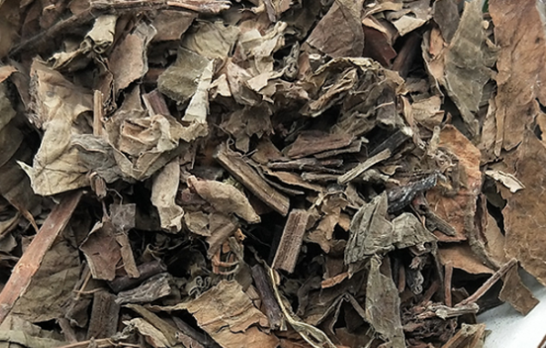
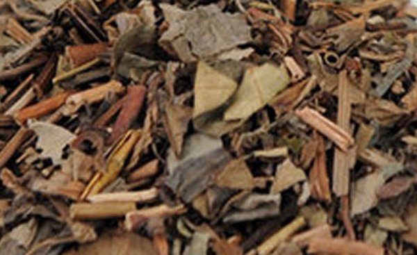

珍珠菜可以当蔬菜食用，属于绿色食品，无毒。而且营养风度，它被农林科学院批准为药用和食品二用的素蔬菜，下面中药大全小编和大家来了解下珍珠菜的功效与作用。

珍珠菜是一种很常见的野菜，主要分布在陕西、河南、山东以及长江以南等地，生长长江边，据报道，100g珍珠菜含维生素C27.74mg、钾720.0mg、钙238.8mg、镁94.36mg、磷49.76mg等多种微量元素以及维生素，特别是钾钙的含量相当高，比一般的蔬菜都高，因此泽珍珠菜可以作为一种保健养生的野菜来食用。
1、妇科病
珍珠菜除了食用价值外，它的要用价格也很高。它具有活血、调经的功效，专门治疗妇科问题，例如妇女的月经不调、白带过多等有很好的效果。
如果月经不调、白带多，可以用珍珠菜15g，当归6g，赤芍9g，川芎3g，附子3g，白术6g，扁豆9g，水煎服，1日2次。
如果只是白带多可以直接用珍珠菜，煎汤服。
2、利水消肿
珍珠菜对解毒消肿也有很好的功效，如果身体有一点点浮肿，可以吃点珍珠菜，第二天你脸上和身上的浮肿就会有所改善。
如果出现水肿治腰酸软，可以用珍珠菜18g，黄芪15g，当归9g，泽泻9g，牛膝6g.丹皮12g，茯苓9g，车前子12g，甘草6g，水煎服，早、晚各服1次。如果是脚肿，可用珍珠菜茎叶，熬水外洗。
3、乳腺炎

在喂奶期间，很多人会因积奶而造成乳腺炎，这时候除了按摩以外，可以吃点珍珠菜，它属于纯天然的食材，既不影响孩子母乳，又对乳腺炎有好的效果。可以用珍珠菜根五钱，葱白七个。酒水各半煎服。
4、跌打损伤
人难免会有磕磕碰碰，有一些轻微的跌打损伤的时候，可以用珍珠菜根、马兰根各五钱。酒水各半煎服。
5、痢疾
夏天是小龙虾的季节，细菌滋生和繁殖的季节，如果有拉肚子等症状，可以用珍珠菜30g，白术15g，元苓9g，莲子心6g，研为末，早晚各一次，每次服3g。
以上为珍珠菜的功效与作用，希望对您有所帮助，了解更多中药请关注中药大全。